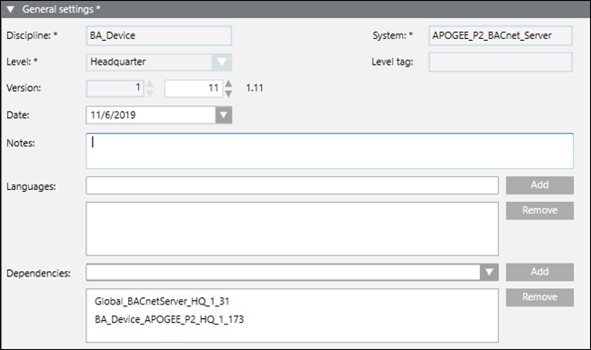
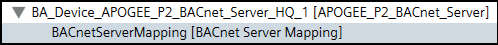
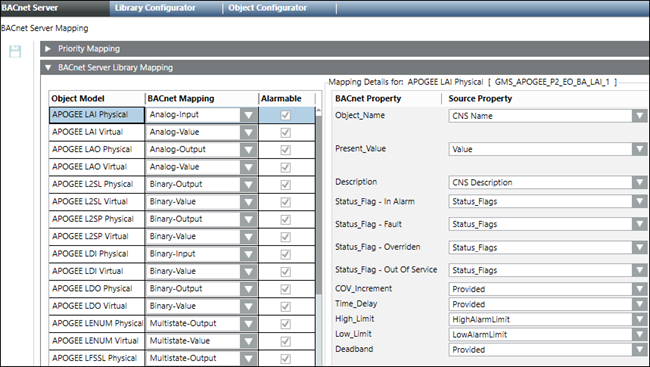

(Optional) Create Library Mapping for a Subsystem
- You want to create and deliver a mapping template for several object models belonging to a subsystem.
- Create a library and set the dependencies to your subsystem library and BACnet Server. The following image shows an example for the APOGEE subsystem:

- Add a BACnet server mapping section to the library.

- From the object models folder of the subsystem library, drag and drop object models you want to use with the BACnet server. Map the properties of the BACnet objects to the properties of your source objects. The following image shows an example of mapping to the APOGEE subsystem. You can provide specific values, or you can mark properties as not applicable if your subsystem does not have an equivalent property.

- Once you complete the mapping, you can export the template as a .gms file and do one or both of the following:
- Import the file into other projects.
- Provide the file to an Application Center Librarian for bundling into an extension module.